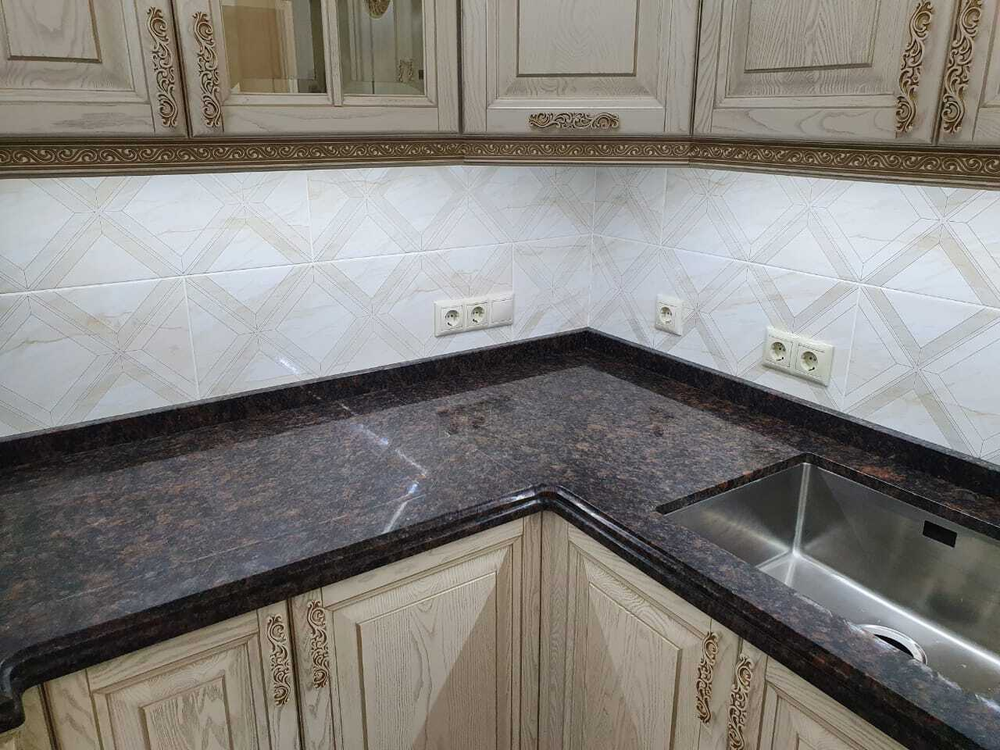

Угловая столешница из гранита Tan Brown с утолщением и профилем L+A
16.07.2022

Угловая столешница из гранита Tan Brown с утолщением и профилем L+A
В проекте изготовили и установили угловую кухонную столешницу из натурального гранита: с утолщённой кромкой, обработкой мойки и вырезом под варочную панель.Задача проекта
Основная задача заказчика — получить:
- надёжную и износостойкую столешницу для ежедневного использования,
- аккуратный внешний вид без видимых стыков,
- гармоничное сочетание с кухонной мебелью и техникой.
Материал и обработка
Для столешницы был выбран натуральный гранит Tan Brown (Тэн Браун) толщиной 20 мм с полированной поверхностью.
Этот материал:
- устойчив к влаге, температуре и механическим нагрузкам,
- не боится горячей посуды,
- сохраняет внешний вид на протяжении многих лет.
Конструктивные особенности
В проекте реализованы несколько важных технических решений:
- Подклейка для утолщения кромки
- Позволяет визуально сделать столешницу массивнее и солиднее без увеличения общей толщины плиты.
- Профиль L+A
- Аккуратный и практичный профиль кромки, подходящий для современных кухонь.
- Мойка с обработкой
- Все вырезы выполнены с точной шлифовкой и полировкой, что исключает сколы и упрощает уход.
- Варочная панель
- Выполнен точный вырез с учётом размеров и зазоров.
- Бортики
- Защищают стену от влаги и загрязнений, создавая завершённый вид рабочей зоны.
Объём выполненных работ
В рамках проекта были выполнены:
- изготовление угловой гранитной столешницы,
- подклейка кромки для утолщения,
- обработка мойки и варочной панели,
- монтаж изделия на объекте.

Результат
Заказчик получил:
- прочную и удобную столешницу для ежедневного использования,
- аккуратную геометрию углов и примыканий,
- единый, цельный внешний вид без лишних стыков,
- изделие, сочетающее практичность и внешний вид натурального камня.
Изделия из гранита требуют точности на всех этапах — от замеров до установки. Мы изготавливаем столешницы с учётом особенностей помещения, мебели и техники.
Если вы планируете столешницу, подоконники или другие изделия из натурального камня, мы поможем:
- подобрать подходящий материал,
- рассчитать стоимость,
- изготовить и установить изделие под ключ.
Обратитесь за консультацией или расчётом: подберём решение под ваш проект.